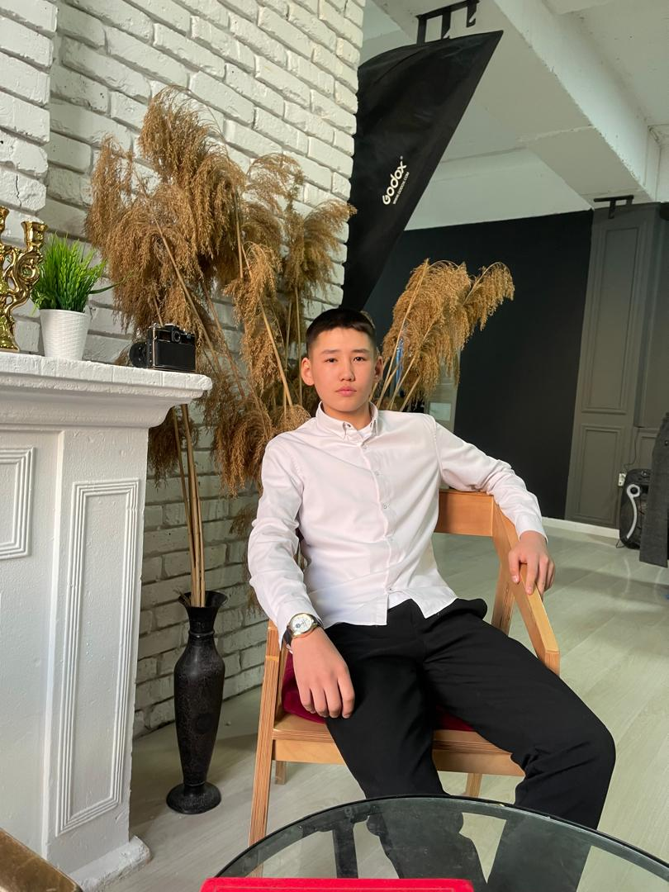
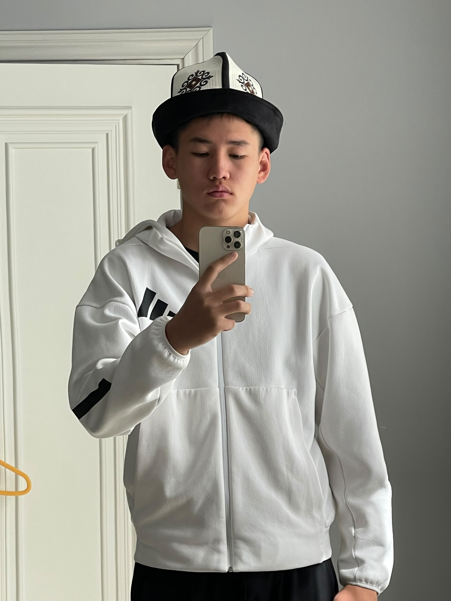
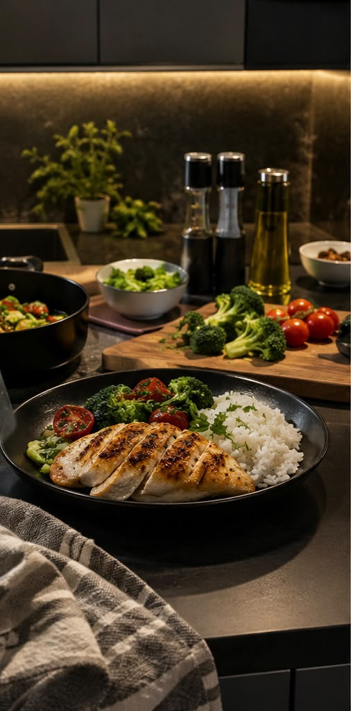
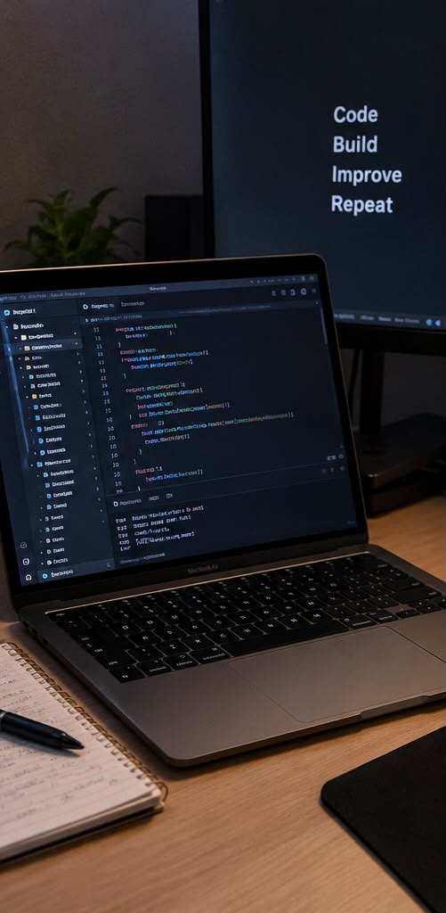
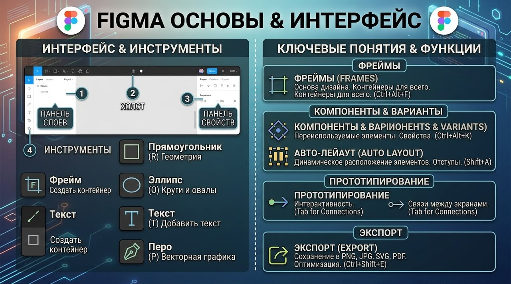
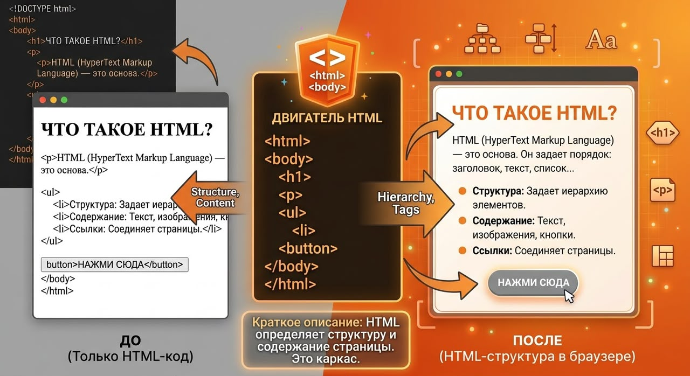
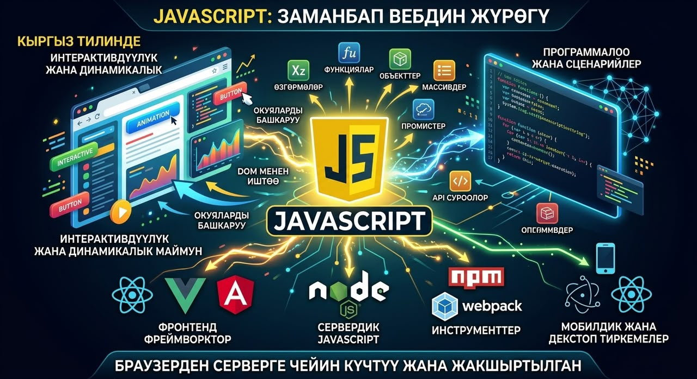

Junior frontend developer
Building simple, modern websites with HTML, CSS, Git, and JavaScript.
I am a 17-year-old second-year student at Ala-Too Business College. I enjoy creating user-friendly layouts, exploring new tools and technologies, and turning ideas into reality through code.

I am learning frontend foundations, practicing simple websites, and exploring new technologies with a focus on structure, layout, and user-friendly interfaces.
ABOUT ME
A creative student building modern frontend experiences.
Hi! My name is Baktykul Yuryev, and I'm 17 years old. I'm a second-year student at Ala-Too Business College, where I'm developing my knowledge and skills for the future.
Outside of my studies, I'm passionate about sports and fitness. Currently, I focus on strength training, building discipline, and improving myself every day.
I believe that consistency, hard work, and a desire to learn are the keys to success. I'm always ready to explore new things, develop my skills, and take on new challenges.
“Every object tells a story if you know how to read it.” A mindset I apply to code, design, and every new challenge.


SKILLS
Frontend foundations and learning tools.
HTML
I use HTML to create the structure of websites, organize content, and build the foundation for modern web pages.
CSS
I use CSS to style websites, make them look attractive, and create layouts that feel clean and user-friendly.
JavaScript
I am learning JavaScript basics to add interactivity, solve problems, and build more responsive frontend experiences.
Git
I use Git to manage versions, track changes, and collaborate on projects in a structured and organized way.
Figma
I practice Figma to create wireframes, explore colors and fonts, and build simple modern designs before moving to code.
Java
I am learning Java basics to understand programming concepts, develop applications, and expand my problem-solving skills.
Linux basics
I use basic Linux commands to navigate files, manage directories, and work with command-line tools in a more confident way.
FRONTEND FOUNDATIONS
What I can build today.
Simple websites
I can create basic websites with clear structure, readable typography, and layouts that work well on desktop screens.
Basic layouts
I practice building layouts with HTML and CSS, focusing on spacing, alignment, and visual hierarchy.
Wireframes and design prep
I use Figma to prepare simple designs, explore colors and typography, and plan the visual direction of a project before coding.
LEARNING APPROACH
How I learn and improve.
Practice first
I learn by building small projects, experimenting with code, and refining my work through repetition and iteration.
Exploring new tools
I stay curious about new technologies, design tools, and development workflows so I can expand my capabilities over time.
Consistency and review
I believe that steady effort, regular review, and a willingness to learn are essential for turning beginner skills into stronger habits.
INTERESTS
Beyond code.
Cooking and recipes
I enjoy cooking and trying new recipes because they allow me to be creative, learn new skills, and experiment with different flavors and techniques.
Sports and fitness
I'm passionate about sports and strength training because they help me stay active, build discipline, and improve myself every day.
Programming and new technologies
I'm interested in programming and learning new technologies because I enjoy writing code, solving problems, and developing my skills.


PORTFOLIO
Selected study materials and practice work.
Figma practice
I practice Figma to create wireframes, explore colors and fonts, and build simple modern designs before moving to code.
HTML and CSS layouts
I build simple layouts with HTML and CSS, focusing on structure, spacing, and visual hierarchy.
JavaScript basics
I am learning JavaScript basics to add interactivity, solve problems, and build more responsive frontend experiences.



CONTACT ME